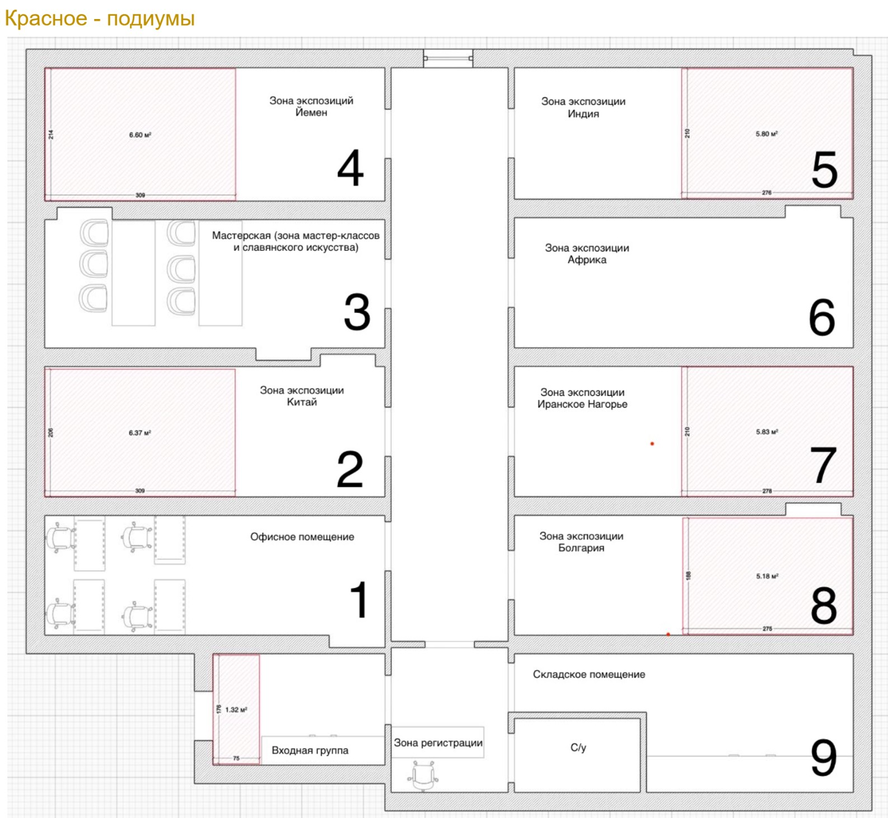

Описание проекта
Название: Дизайн-проект музея ювелирного искусства «Сокровища мира» (рабочее).
Место: Нижний Новгород, ул. Рождественская, 40 – историческое здание, объект культурного наследия.
Цель: Создание современного музейного пространства, где коллекция традиционных украшений разных стран экспонируется в атмосфере «кабинета путешественника», с использованием интерактивных технологий при полном сохранении исторической архитектуры.
Задачи проекта
- Разработать уникальную концепцию экспозиции с разделением на 9 залов по регионам.
- Спроектировать витрины и климатические системы для сохранности драгоценных экспонатов.
- Внедрить мультимедийные решения: сенсорные киоски, AR-примерку, направленный звук, тактильные 3D-копии.
- Организовать зону мастер-классов и кофе-станцию.
- Обеспечить соблюдение норм пожарной безопасности и доступности для МГН.
Концепция залов
1. Китай – шёлковое изящество, минимализм, подиум с заколкой, AR-зеркало.
2. Мастерская – славянское искусство, инструменты, интерактивная игра «Собери украшение».
3. Йемен – бедуинские амулеты, манекен в костюме, сенсорная панель о символике.
4. Индия – гривна «Хансулли», карта месторождений камней, шёлковые драпировки.
5. Иранское нагорье (Афганистан, Пакистан, Туркмения) – подвески «Дагдан», карта Шёлкового пути.
6. Африка + Венеция – интерактивный стол «Путь бусины», венецианские бусы и туарегские кольца.
7. Болгария – пафты, филигрань, аромат роз, проекция лепестков.
8. Офисное помещение – кабинет управляющего коллекцией.
9. Хранительное помещение – стилизованный «сейф».
